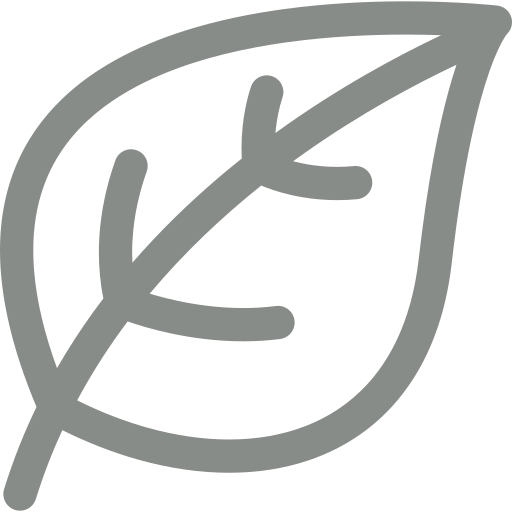
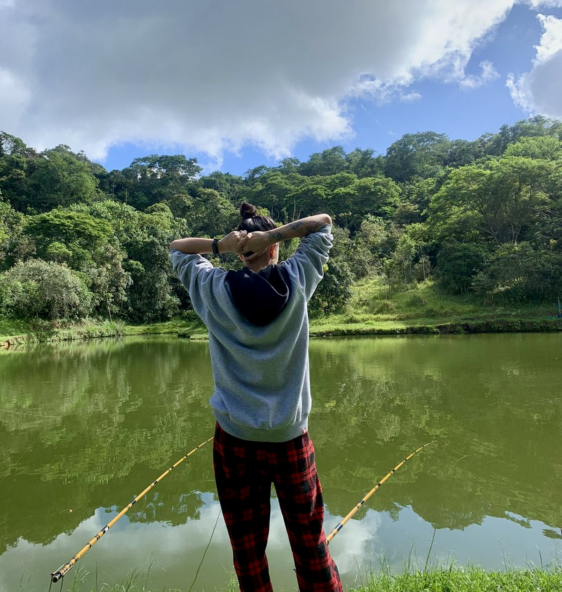
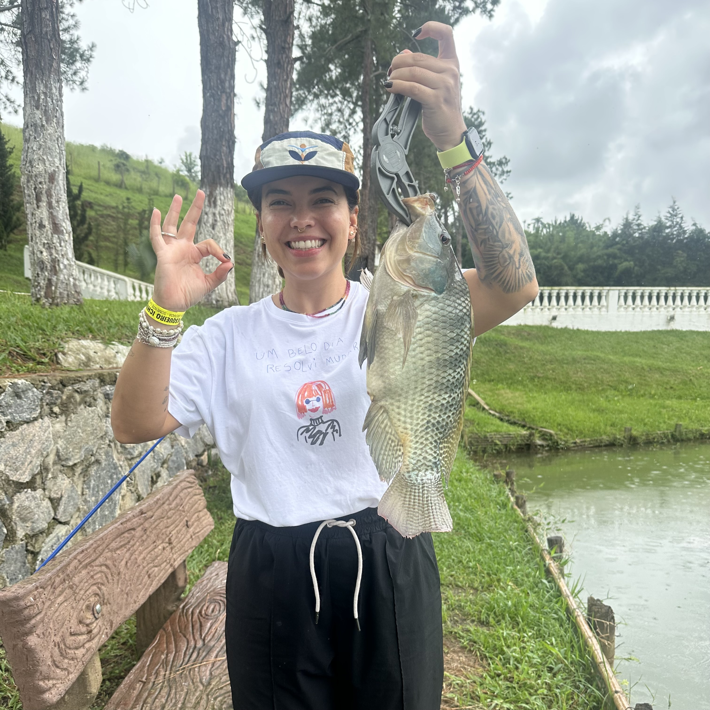
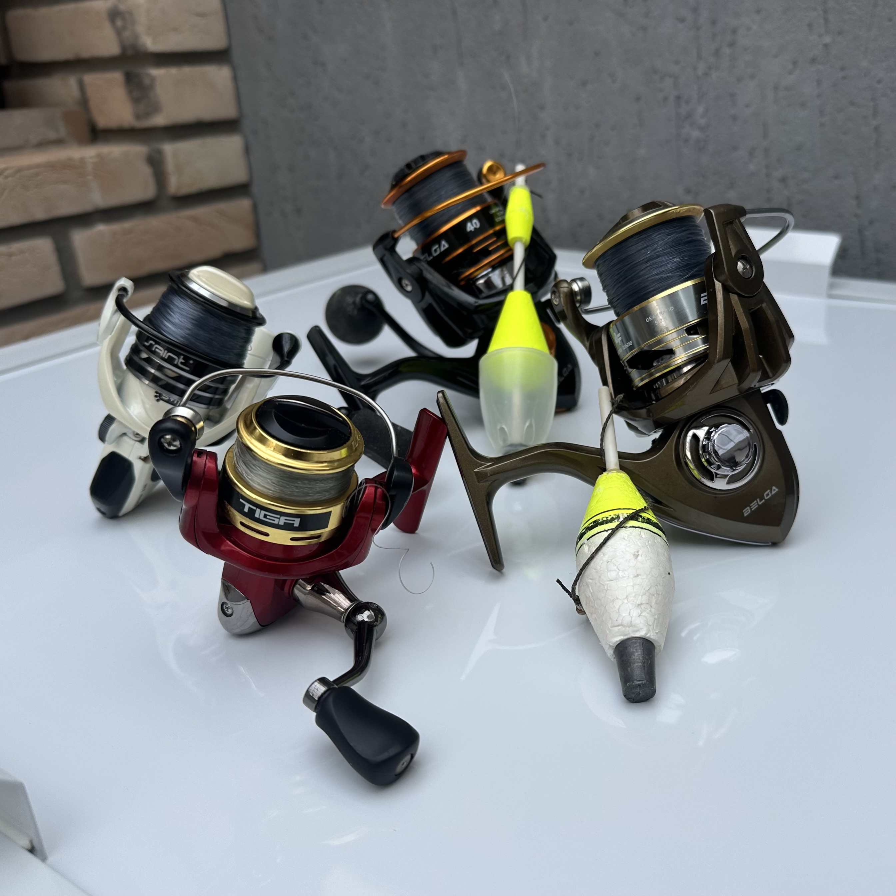
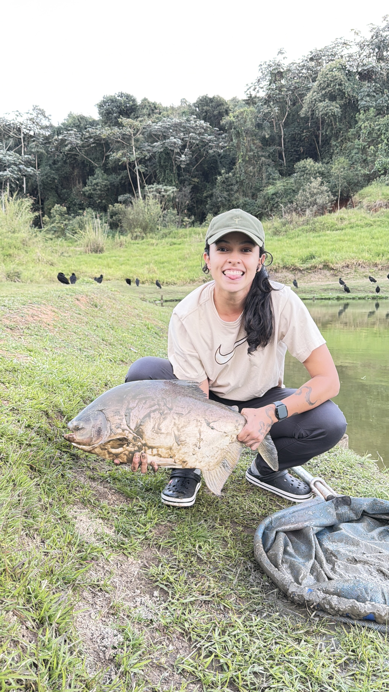

UM PORTAL PARA APRENDER A PESCAR MELHOR
Onde a paixão pela pesca encontra o conhecimento.
No Fishing Lab, a curiosidade encontra o lago. Descubra os peixes que pesquei, prepare seu equipamento e aprenda a pescar em pesqueiros com mais consciência.

Para iniciantes. Com respeito à natureza.
APRENDA - TRÊS CAMINHOS, UMA BOA BASE
Antes de lançar a linha, explore.

01 - CONHEÇA QUEM HABITA O LAGO
Espécies de peixes
Da tilápia a pirarara: hábitos, alimentação e particularidades de sete peixes de pesqueiro.

02 - PREPARE SUA PESCARIA
Equipamentos
Entenda a função de cada item e escolha um conjunto adequado ao peixe e ao pesqueiro.

03 - APRENDA NA PRÁTICA
Técnicas de pesca
Leia o ambiente, conheça iscas e montagens e aprenda a cuidar do peixe em cada etapa.

Um dia de pescaria no pesqueiro.
DE ONDE VEM O FISHING LAB
Muito além de uma pescaria
A pesca faz parte da minha história há muito tempo. E cada fase trouxe uma lembrança diferente.
Onde tudo começou
Na infância, eu pescava com meu pai e meu tio. Foi assim que comecei a gostar desse mundo.
A vontade de voltar
Anos depois, voltei a pescar com minha esposa. E a vontade de continuar explorando este mundo só aumentou!
Nasce o Fishing Lab
Quis reunir o que fui aprendendo e compartilhar com quem também gosta ou quer aprender pescar.